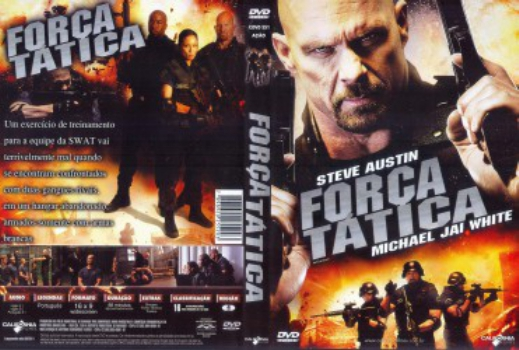

Força tática (2011)



Avaliação (TMDb):


5.2/10 (70 votos)
Avaliação (Usuário):
Outro Título:Tactical Force (Título Original)
País:United States, 91 minutos
Idiomas falados:Inglês, Português
Gênero(s):Ação, Suspense
Diretor(s):Adamo P. Cultraro
Codec:MPEG-2 (DVD)
Número: 1495
Sinopse:
Um exercício de treinamento para a equipe da SWAT vai terrivelmente mal quando se encontram confrontados com duas gangues rivais, em um hangar abandonado, armados somente com armas brancas.
Elenco:
Steve Austin, Michael Jai White, Michael Shanks, Lexa Doig, Darren Shahlavi, Steve Bacic, Adrian Holmes, Michael Eklund, Peter Kent, Keith Jardine
Tipo de mídia: DVD5,
Legendas: Português
Alugado: Não
Tela: 1.78:1